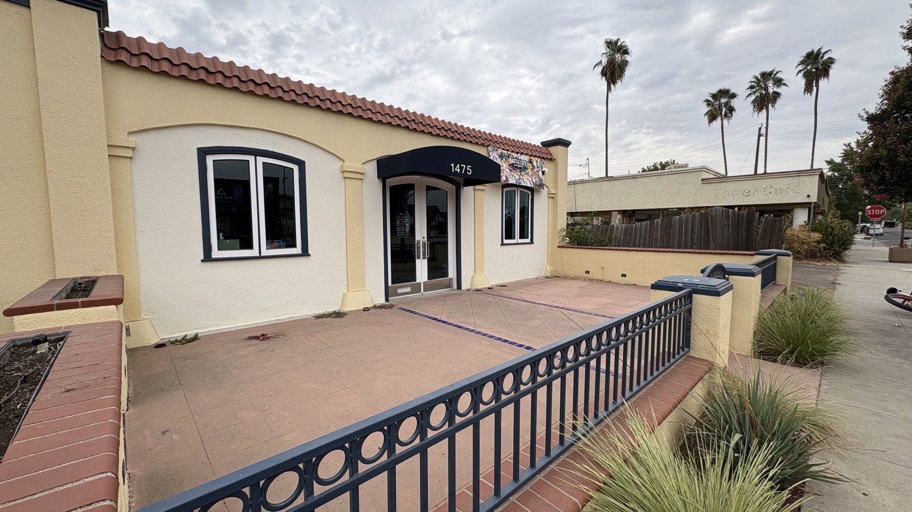
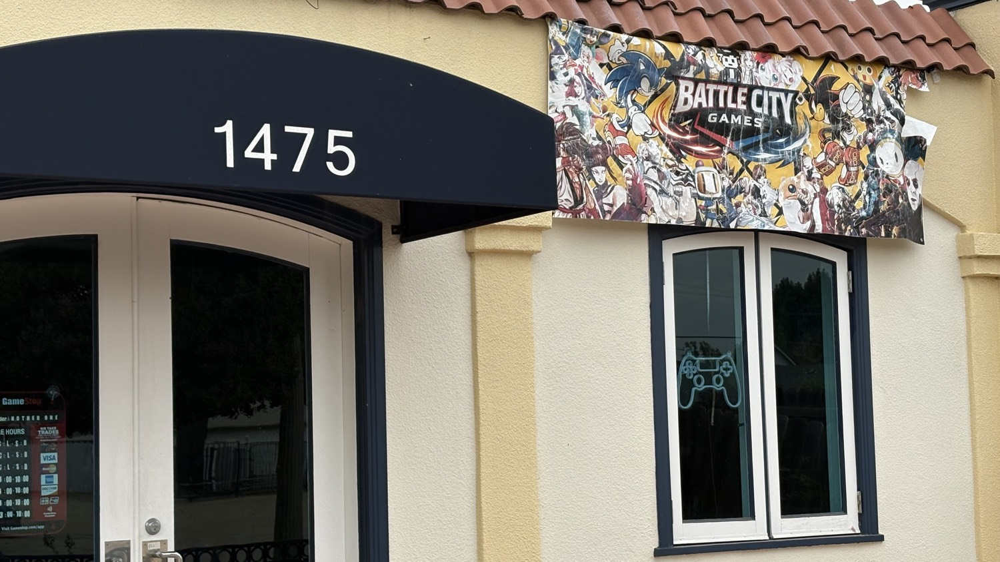
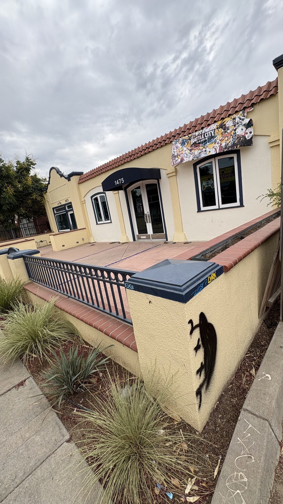
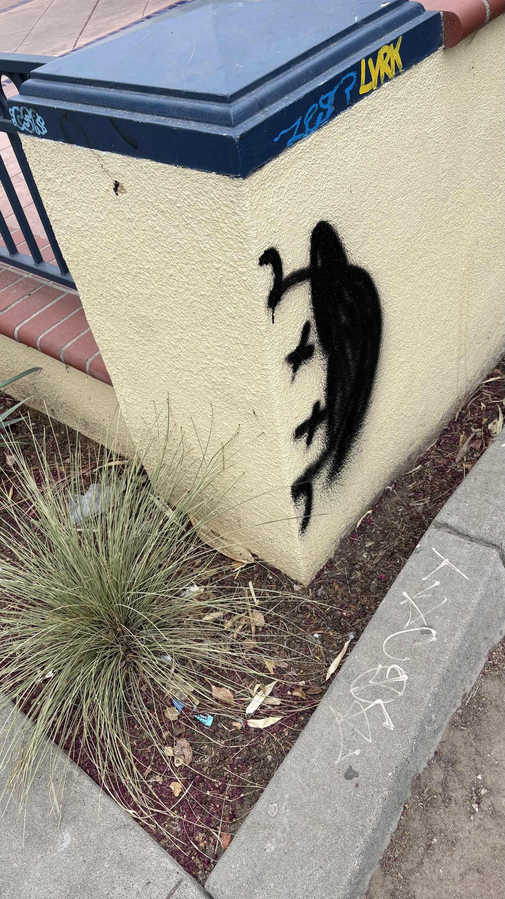
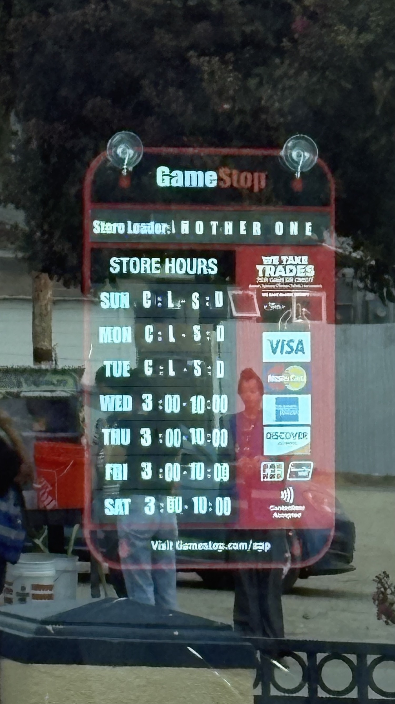

What is on the record
Place
Battle City Games
1475 N Van Ness Ave, Van Ness Village, Fresno
Wednesday morning
August 26, 2026
A man threw a rock at the front door. The glass held. Nothing was taken.
Second mark
Patio tagged
Owner Phillip Lout said a separate group tagged the side of the patio.
What changed
Hardware leaves at close
Consoles and computers now go home at night. The shop stays open.
What the owner said
Phillip Lout opened Battle City Games on April 2, 2026, during Art Hop. The first-day story was already public. His first shift at the Selma GameStop was also the day they announced the store would close. He put his childhood collection on the floor of a Van Ness Village storefront and built an arcade and tournament room in the back.
Four months later he told KSEE the block had been relatively clear, then the last week "exploded." Nearby owners said they recognized the man in the video Lout posted to Instagram.
It was only a matter of time but didn’t expect it to be this soon. Thankfully minimal damage happened and nothing was stolen but man I just wanted to open something for the community and some people have to ruin it. We will no longer be keeping the consoles at the shop anymore we will be taking them with us at night. To add insult to injury another group tagged the side of our patio.
KSEE ran the item the next afternoon under a crime lower-third and a stock Game Boy with a Tetris cart that does not belong to this shop. The useful sentences were already in Lout's caption. The station did not report a police case number. As of Friday morning that number is still not on the public record used here.

Friday morning at 1475
The building is cream stucco with a red tile edge, a navy awning, and the number 1475 over double glass doors. The patio is raised brick with a navy rail. Tower Cafe is the next sign down the block. Palms sit behind the fence line. From the sidewalk the shop looks open-ready, not boarded.
That is the honest scale of Wednesday. A rock hit a door and failed. The expensive thing that changed is not a shattered storefront. It is the nightly load-out. Fighting-game setups, arcade boards, and whatever else is worth walking out the door now leave with the owners so the room can exist the next afternoon.

The marks on the wall
Lout separated the incidents on purpose. The rock was one person. The patio tag, he said, was another group. Friday morning the pillar at the sidewalk still carries both lettered marks on the navy cap and a large black figure sprayed on the cream face.

A neighbor who watches tags in this district says some of the lettered marks resemble tags that have shown up on other damaged storefronts. He does not claim a name for the large black figure. It reads, depending on the angle, like a person in a hat looking around the corner with an X for an eye, or like something less human. He takes that mark to be the newer one.
Similarity is not identification. This page does not name a crew from a photograph. It records what is on the wall, what the owner said about two groups, and what a person who lives here thinks he has seen before. If the shop files a report, the photographs belong in that file, not in a guessing thread.
The shop under the incident
Battle City Games is five months old. It sells retro inventory from Lout's own collection. It keeps an arcade in the back. It hosts fighting-game nights and is trying to grow a local tournament scene. Published coverage at opening listed Wednesday through Sunday, 3 p.m. to midnight. The reused GameStop hours board still stuck to the door on Friday reads Wednesday through Saturday, 3 to 10, with Sunday through Tuesday closed, and names the store leader as ANOTHER ONE.

That board is not decoration. It is the leftover skin of the job that pushed Lout to open this room. The television package treated the address as generic crime B-roll. The actual business is a late-day third place for people who still want to sit across a cabinet or a stick from someone else. Hauling the consoles home is how they keep that room from becoming an unattended target after midnight.
What this is not
- It is not a completed burglary. The door held. The inventory stayed.
- It is not proof that one person did both the rock and the tag. The owner said otherwise.
- It is not a closed police narrative. No case number was in the KSEE write-up.
- It is not a reason to close the shop. Lout said they will stay open and lean harder on tournaments.
The room is the point
Van Ness Village can hold a walk-in arcade or it can watch another small room decide the nightly carry-out is the cost of staying. That is a district question, not a Game Boy graphic.
If you play there, play there. If you own a camera on that block, keep it. If you recognize the figure on the pillar and have something other than a rumor, take it to the shop and to the police, not to a comment stack.
Tournament times live on the shop's Instagram. The address is 1475 N Van Ness. The hardware leaves at night. The door is still there in the morning.
Sources
- Phillip Lout, Battle City Games Instagram post, August 26, 2026. instagram.com/p/Dch_EqrG3NT
- KSEE/KGPE, "Attempted break-in forces Fresno video game store to change its ways," August 27, 2026. yourcentralvalley.com
- KSEE/KGPE, "Battle City Games Opens in Fresno's Tower District," April 2, 2026. Address, hours as first published, GameStop origin, collection and arcade description.
- Site photographs, 1475 N Van Ness Avenue, morning of August 28, 2026. High Tower District.
- Battle City Games public pages listing 1475 N Van Ness Ave and tournament promotion.